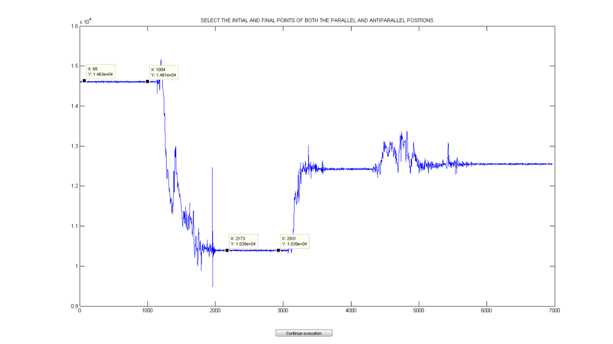
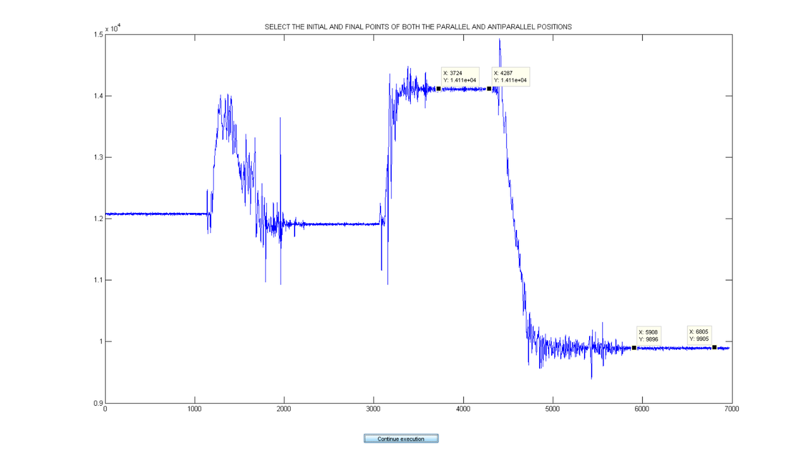
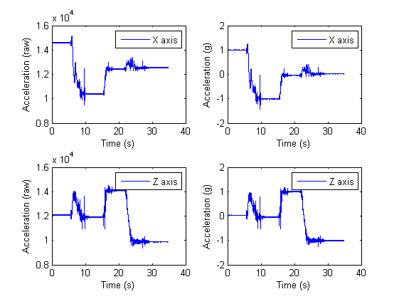

1D ACCELEROMETER CALIBRATION
The following script carries out the computation of the calibration parameters of the biaxial accelerometers which are located in the shank and thigh units. The calibration maneuvers are quite simple. The accelerometer needs to be placed with each of its axes parallel and antiparallel to the Earth's gravity vector. Therefore, we will have 2 reference values (1g and -1g) for each of the accelerometers which are used to find the scale factor and bias.
Contents
- 0) General and initial configuration.
- 2) Select the the sensor unit.
- 2) Load raw calibration data and extract header information.
- 3) Extract corresponding channels.
- 4) Select the +1g and -1g values of the raw acceleration signal.
- 5) Compute the calibration parameters.
- 6) Calibrate the acceleration signal.
- 7) Save the calibration parameters.
- 8) Plot raw and calibrated acceleration signals from both axes.
- Authors : Alberto Olivares and Kai Bötzel.
- Entities : Universidad de Granada & Ludwig-Maximilians Universität München.
- Version : 1.0.
- Last modification : 5/11/2013.
0) General and initial configuration.
Load GaitWatch's functions library.
gw = gwLibrary;
Define the magnitude measure by the sensor (acceleration in this case).
magnitude = 'a';
Load GaitWatch's data structure.
load data/gWDataStruct.mat
size_data_struct=size(data_struct);
Define the flag which controls if the figures are to be shown and stored or just stored.
showPlot = 'yes';
2) Select the the sensor unit.
Now, the user is shown a list in which he should select the segment containing the gyroscope whch is going to be calibrated.
S = cell(1,size_data_struct(1));
We select only the rows in which the magnitude is the acceleration ('a') and the calibration is uniaxial (1).
for i = 1:size_data_struct(1) if strcmpi(data_struct{i,2},'a') && data_struct{i,6} == 1 S{i} = [data_struct{i,4},' ',data_struct{i,5}]; end end
We remove the empty cells and the repeated values.
S = S(~cellfun('isempty',S)); S = unique(S,'stable');
Finally, the list is shown to the user.
Selection = listdlg('ListString',S,'Name',... 'Select the unit you wish to calibrate','ListSize',[160 100],... 'SelectionMode','single');

switch Selection
Right shank.
case 1
segment_name = 'shank'; position = 'right';
Right thigh.
case 2
segment_name = 'thigh'; position = 'right';
Left shank.
case 3
segment_name = 'shank'; position = 'left';
Left thigh.
case 4
segment_name = 'thigh'; position = 'left'; end
2) Load raw calibration data and extract header information.
The first step is to load the raw accelerometer data which was gathered during the calibration maneuvers. The user can select between loading the data directly from GaitWatch or loading it from the hard drive.
S = {'Load data from GaitWatch','Load data from hard drive'};
Selection = listdlg('ListString',S,'Name',...
'Select the origin of the data','ListSize',[250 100],'SelectionMode',...
'single');

switch Selection
Load data from GaitWatch.
case 1
GW_comm;
data_path = strcat('data/calibration/accelerometer/',position,'_',...
segment_name,'_rawCalAccData.mat');
save(data_path,'data','FileHeader');
Load data from the hard drive.
case 2
[data, FileHeader] = gw.openGWfile();
end
And then, we extract some of the information contained in the header.
[f, cal_date, cal_start_time, cal_end_time] = gw.getFHinfo(FileHeader);
3) Extract corresponding channels.
Once we have selected the corresponding segment and associated channels, we load the data matrix and extract them.
Define the axes of the biaxial accelerometer.
sensor_axis1 = 'X'; sensor_axis2 = 'Z';
Get the channel numbers for the selected segment.
channel1 = gw.getDataChannel(data_struct, magnitude, sensor_axis1,... position, segment_name); channel2 = gw.getDataChannel(data_struct, magnitude, sensor_axis2,... position, segment_name);
Extract acceleration data from selected segment.
ax = double(data(:,channel1)); az = double(data(:,channel2));
Build time signal.
time=zeros(1,length(ax)); for i=1:length(ax)-1 time(i+1)=time(i)+1/f; end
4) Select the +1g and -1g values of the raw acceleration signal.
The next step is to select the two raw acceleration values when the axis is set parallel and antiparallel to the gravity vector. To do so, the user is shown the raw acceleration in X axis gathered during the calibration maneuvers. He then has to select the initial and final points of the two static positions. After that, the mode of both periods is computed. We do this for both axes.
[ax_parallel, ax_antiparallel] = gw.get_acc_parallel_values(ax); [az_parallel, az_antiparallel] = gw.get_acc_parallel_values(az); 
5) Compute the calibration parameters.
Once the parallel and antiparallel raw acceleration values have been extracted for both axes we can compute the biases and the scale factors.
b_x = (ax_antiparallel/ax_parallel + 1)/(ax_antiparallel/ax_parallel - 1); k_x = (1 - b_x)/ax_parallel; b_z = (az_antiparallel/az_parallel + 1)/(az_antiparallel/az_parallel - 1); k_z = (1 - b_z)/az_parallel;
6) Calibrate the acceleration signal.
After the computation of the calibration parameters, we apply them to calibrate the raw acceleration signals.
axC = (ax * k_x) + b_x; azC = (az * k_z) + b_z;
7) Save the calibration parameters.
Once the calibration parameters are computed we store them together with the date and time in which the calibration data were gathered.
data_path_1 = strcat('data/calibration/accelerometer/',position,'_',... segment_name,'_',sensor_axis1,'_accCalParams.mat'); data_path_2 = strcat('data/calibration/accelerometer/',position,'_',... segment_name,'_',sensor_axis2,'_accCalParams.mat'); save(data_path_1,'k_x','b_x','cal_date','cal_start_time',... 'cal_end_time'); save(data_path_2,'k_z','b_z','cal_date','cal_start_time',... 'cal_end_time');
8) Plot raw and calibrated acceleration signals from both axes.
The final step is to plot raw data vs. calibrate data.
close all
Plot raw vs. calibrated data.
figure subplot(2,2,1) plot(time,ax); legend('X axis') xlabel('Time (s)'); ylabel('Acceleration (raw)'); subplot(2,2,2) plot(time,axC); legend('X axis') xlabel('Time (s)'); ylabel('Acceleration (g)'); subplot(2,2,3) plot(time,az); legend('Z axis') xlabel('Time (s)'); ylabel('Acceleration (raw)'); subplot(2,2,4) plot(time,azC); legend('Z axis') xlabel('Time (s)'); ylabel('Acceleration (g)'); figure_path = strcat('figures/calibration/accelerometer/',position,... '_',segment_name,'_rawVsCalAcc.fig'); saveas(gcf,figure_path);